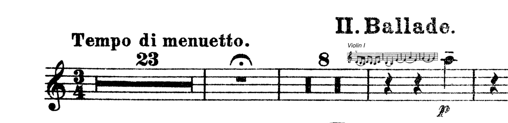
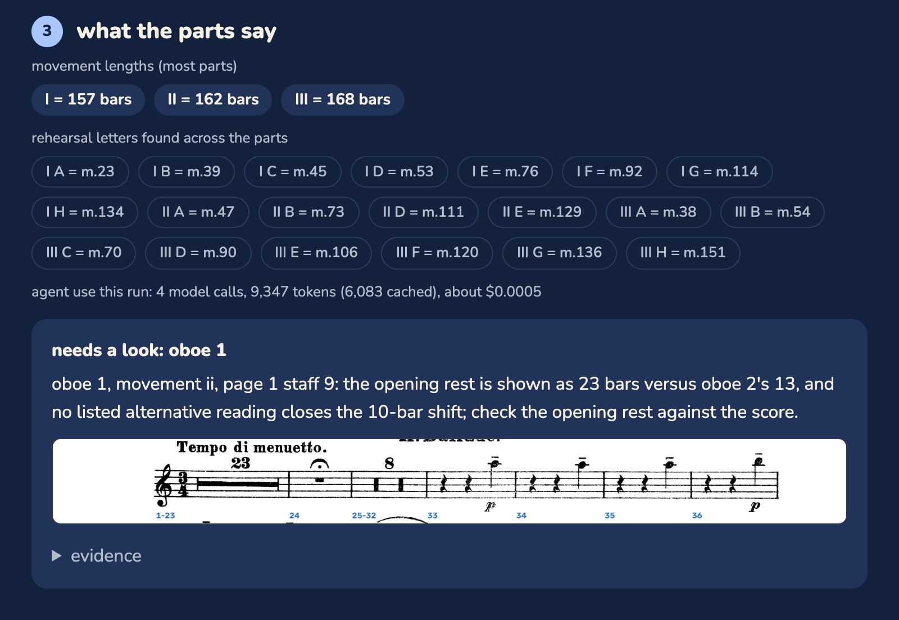
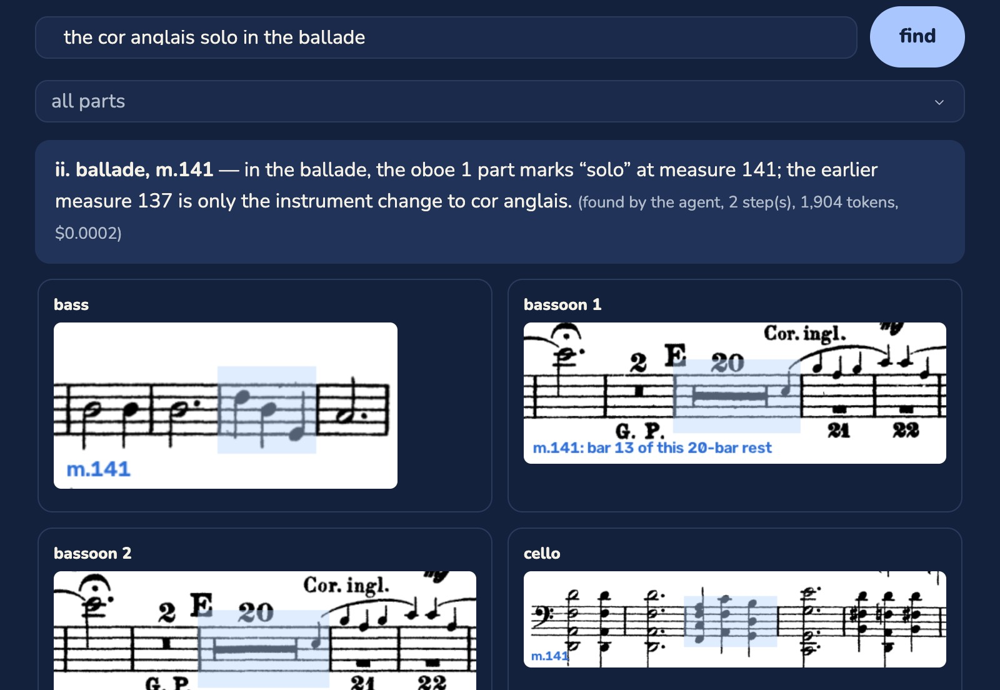
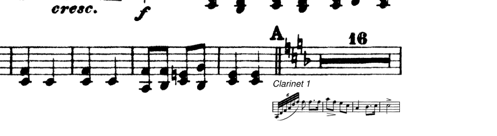
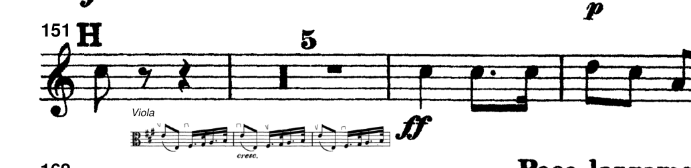
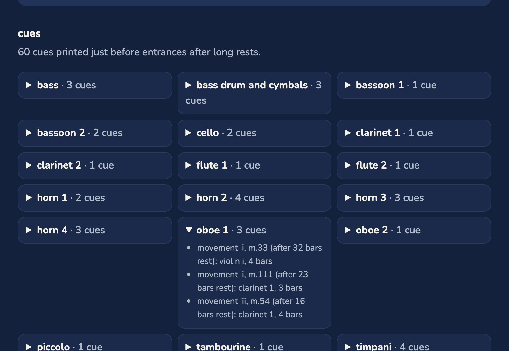

an agent that numbers, checks and cues scanned orchestral parts, so every player is on the same bar.
battuta (the beat, or bar) + tutti (everyone) = batutti
count less, play more
michelle chen · mgt 409 ai foundations · fall 2026 · github.com/michelle-brooke-chen/batutti
1,224 us orchestras (league of american orchestras, 2014), most without a full-time librarian.

oboe i: "23", a fermata, "8": which bar is the entrance? (the 23 is a misprint: the score has 13.)
| today | problem |
|---|---|
| pencil, or the librarian | hours per set; misprints go unnoticed |
| sibelius, dorico, musescore | only for re-typed music, with a new layout |
| omr: audiveris, scanscore, photoscore | must be proofread; rhythm right in 32% of bars on our violin i |
| forscore, newzik | you still write every number yourself |
| chatgpt vision | read "13" as "18" with 0.97 confidence |
code does the counting; each agent makes one decision with a few tools.
code checks every tool call: a count may change only to a value both readers saw.
all four: gpt-6-luna, low reasoning effort.


29 parts87 pages~30 s
set checker: oboe i's ballade is 10 bars out; it points to the opening rest (page 1, staff 9), printed 23 where oboe ii has 13.
navigator: "the cor anglais solo in the ballade" → ii, m.141, shown in every part, even mid-rest.

violin ii: a 4-bar clarinet i cue under a 16-bar rest

trumpet i: a 3-bar viola cue

60 of 60 entrances cued, in ~80 s. a violinist shaped the rules: melodic lines only, none after a fermata or g.p., right before the entrance.
$0.0005
numbering + checking all 29 parts (4 calls, 9,347 tokens, 6,083 cached)
$0.0038
with cues for all 60 entrances
$0.0002
a navigator question; $0 if parsed in code
| users | model | total / month* |
|---|---|---|
| 1 | $0.03 | $0.12 |
| 100 | $3 | ~$42 |
| 10,000 | $300 | ~$1,700 |
recognition costs more than the agents. cuts: code first, agents only when needed; luna at low effort (medium gave the same answers at up to 1.9× the cost); batching; prompt caching; call caps.
*usage and hosting are estimates; token costs are measured.
.env; no tool can read itcaught in testing: the set checker once blamed a "4" that only one reader saw. now both must agree; 5 of 5 runs after the fix were right.
916 / 916
staves numbered exactly, all 29 parts (player-checked keys)
1
real publisher misprint found and confirmed
60 / 60
entrances cued
pilot: 5 musicians (2 violinists, percussion, clarinet, oboe) numbered Violin I (7 pages) by hand in 5¾–14½ min (median 7); batutti: 3⅓ min (Violin I) and 2½ min (Violin II), unattended, 0 errors, 0 questions. 1 of 7 hand-numbered parts kept an error (a number used twice: one bar off for the rest of the movement).
"if it's able to reliably number measures in old engravings like this then that's a cool idea" — Kai, orchestra librarian
first run on the 24 wind, brass and percussion parts: 9 of 52 movements exact; now all exact.
66% → 80%
bars played exactly right, 26 pitched parts, against a reference score
bars from batutti, notes from Audiveris; clefs, keys, transpositions, tunings and accidentals checked against the page; rhythm repaired in code
an agent repairing rhythms gained 1 bar in 58: measured, and left out
next: play from any bar in the app · more music, scored before changing rules · hosting with a spending limit
batutti
count less, play more